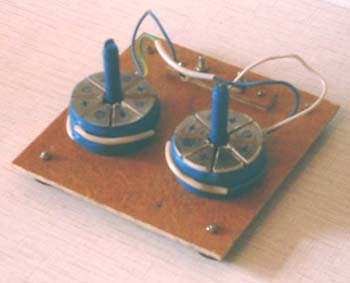

Устройство для
8-полюсного аксиального импульсного
намагничивания ферритовых колец диаметром до 70 мм

Назначение
Устройство намагничивающее импульсное 8-полюсное аксиальное
предназначено для работы в составе установок намагничивания [4] в комплекте с
различными генераторами мощных импульсов тока [1, 2]. Оно позволяет производить
аксиальное (по высоте) восьмиполюсное с переменной полярностью намагничивание
феррит-бариевых или феррит-стронциевых постоянных магнитов марок БА, СА, а также
магнитопластов [3] на их основе - колец диаметром до
70 мм и высотой до 10 мм.
Технические данные:
- число полюсов - 8, направление намагничивания -
аксиальное (по высоте) с чередующейся полярностью
- размеры намагничиваемых колец: диаметр отверстия от 20
мм, наружный диаметр до 70 мм, высота до 10 мм
- амплитуда магнитной индукции на поверхности полюсных
наконечников не менее 1 Тл при амплитуде импульса тока не более 1000 А
- длительность импульса тока не более 10 мс
- форма импульса тока произвольная (синусоидальная,
колоколообразная, с экспоненциальным фронтом и спадом и т. п.)
- частота следования импульсов тока не менее 1 импульса в 2
мин
- готовность к работе - сразу после включения
- габаритные размеры не более 200 х 200 х 130 мм3
- масса не более 2 кг
Устройство состоит из двух идентичных частей, каждая из
которых представляет из себя восьмиполюсную магнитную систему с обмотками. При
работе намагничиваемое кольцо помещается на одну из этих систем и закрывается
другой в соответствии с маркировочными метками. Если кольцо не закрывать, то
можно получить неоднородное намагничивание (существенно более слабое с одной
стороны), что также находит применение. При этом производительность установки
намагничивания удваивается.

Рис. 1. Внешний вид установки восьмиполюсного аксиального
намагничивания феррит-бариевых (феррит-стронциевых) колец в комплекте с
однополярным генератором мощных импульсов тока [1].

Рис. 2. Внешний вид установки восьмиполюсного аксиального
намагничивания феррит-бариевых (феррит-стронциевых) колец в комплекте с
емкостным накопителем энергии [2].
Состояние разработки:
Используется в лабораторных условиях для намагничивания
небольших партий колец из феррита бария и феррита стронция.
Ссылки:
- Генератор мощных
импульсов тока однополярный
- Генератор мощных импульсов
тока (емкостной накопитель энергии)
- Изготовление и
применение магнитопластов (магнитоэластов)
- Установки
импульсного намагничивания и размагничивания постоянных магнитов
Словарь
терминов:
- Генератор импульсов - прибор или устройство для
создания последовательности импульсов.
- Импульсный генератор - генератор
импульсов напряжения или тока.
- Магнитная индукция - вектор, численно
равный пределу отношения силы, действующей со стороны магнитного поля на
элемент проводника с электрическим током, к произведению тока и длины
элемента проводника, если длина этого элемента стремится к нулю, а элемент
так расположен в поле, что этот предел имеет наибольшее значение, и
направленный перпендикулярно к направлению элемента проводника и к
направлению силы, действующей на этот элемент со стороны магнитного поля,
причем из его конца вращение по кратчайшему расстоянию от направления силы к
направлению тока в элементе проводника должно быть видно происходящим против
часовой стрелки.
- Магнитопласт
- полимерный постоянный магнит, изготовленный на основе смеси
магнитотвердого порошка и связующего полимера.
- Многополюсный магнит - постоянный
магнит, имеющий более одной пары магнитных полюсов.
- Намагничивание
- воздействие на образец магнитным полем, вследствие которого у образца
появляется отличная от нуля остаточная намагниченность.
- Постоянный магнит - объект, создающий
магнитное поле за счет собственных внутренних элементарных электрических
токов, текущих без использования внешнего источника энергии в составляющем
объект материале.
- Феррит бария - магнитотвердый материал
на основе окислов железа и бария состава BaO·6Fe2O3. В
обозначении марки (например, 19БА190) первое число (19) обозначает
энергетическое произведение (в кА·Тл/м), первая буква - состав феррита (Б -
бариевый), вторая буква - свойства (А - анизотропный, И - изотропный),
второе число (190) - коэрцитивную силу по намагниченности (в кА/м).
- Феррит стронция - магнитотвердый
материал на основе окислов железа и стронция состава SrO·6Fe2O3.
В обозначении марки (например, 28СА250) первое число (28) обозначает
энергетическое произведение (в кА·Тл/м), первая буква - состав феррита (С -
стронциевый), вторая буква - свойства (А - анизотропный, И - изотропный),
второе число (250) - коэрцитивную силу по намагниченности (в кА/м).
26.08.2004
08.09.2005
23.06.2010
Альтернативные источники
энергии
Компьютеры и
Интернет
Магнитные поля
Механотронные системы
Перспективные
разработки
Электроника и
технология
Главная страница